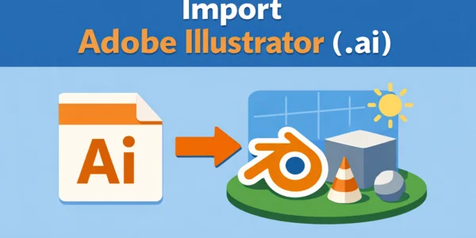
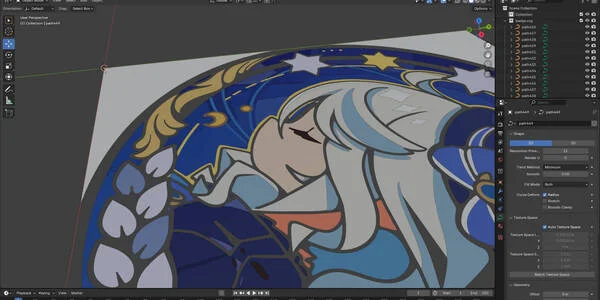
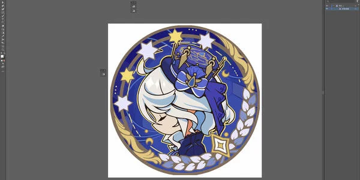
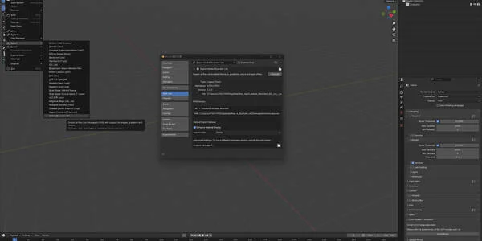
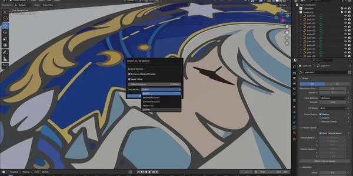
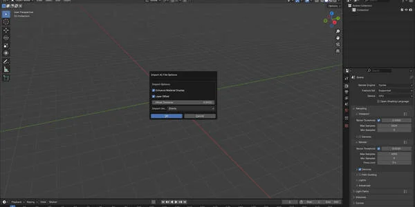
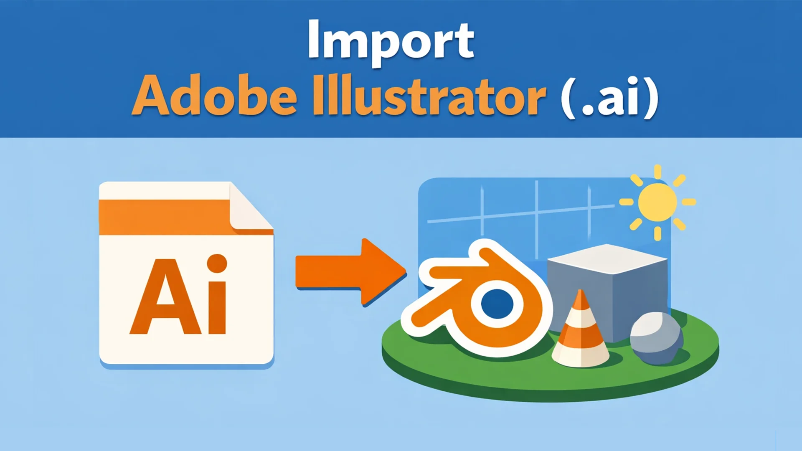
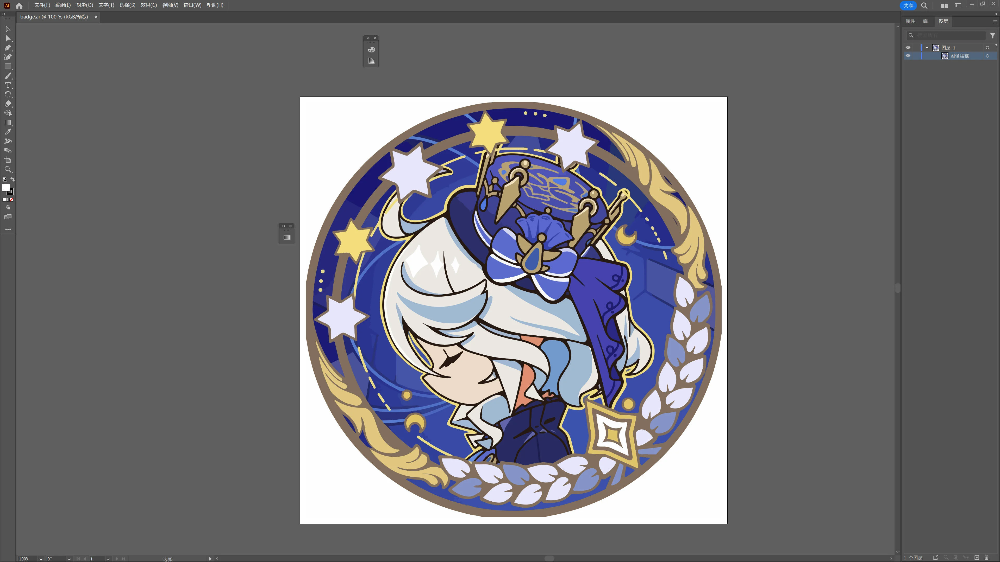
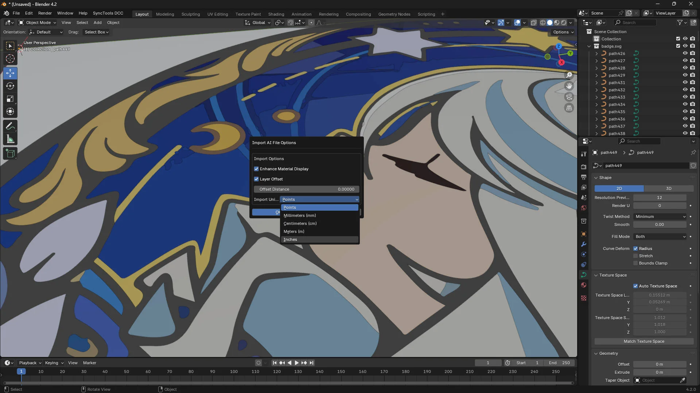
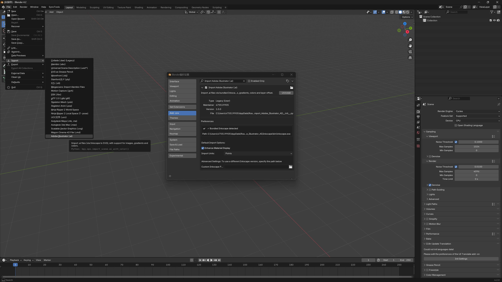

导入 Adobe Illustrator 文件 (.ai)
$8.00相册






产品信息
分类插件, 导入 & 导出, 建模
Blender 版本3.6 ~ 5.0
授权协议GPL
价格$8.00
2daddonaianimationtoolsforblenderautomationblenderconverterdesigndevelopersfile-watcherhot-reloadillustratorinkscapeproductivitypythonscriptscript-developmentsvgtext-editorvector
描述
导入 Adobe Illustrator (.ai) 文件 将 Adobe Illustrator .ai 文件直接导入 Blender，完全支持图像、渐变、颜色和图层组织。这款强大的插件使用内置的 Inkscape 来将 .ai 文件转换为 SVG 格式，确保与 Blender 原生 SVG 导入器的无缝集成。 |

功能介绍 功能介绍 此插件弥合了 Adobe Illustrator 和 Blender 之间的差距，让您能够将矢量图稿无缝导入 Blender 的 3D 环境中。 无论您在 Illustrator 中创建徽标、插图、技术图纸还是图形设计，现在都可以将它们直接导入 Blender 进行 3D 可视化、动画、纹理制作或进一步的创意工作。 | |||||||||||||||
核心功能 核心功能   | |||||||||||||||
| |||||||||||||||
应用场景 应用场景 
| |||||||||||||||
工作原理 工作原理 插件使用精密的转换管线：
| |||||||||||||||
技术细节 技术细节 该插件使用 Inkscape 强大的转换引擎（已内置）将 .ai 文件转换为 SVG 格式，然后使用内置的 SVG 导入器导入到 Blender 中。这确保了最大的兼容性和高质量的保留。
| |||||||||||||||
安装 安装和设置 安装非常简单——只需通过 Blender 的偏好设置安装插件即可使用。 无需额外配置。 内置的 Inkscape 会被自动检测和使用。 高级用户可以选择指定自定义 Inkscape 路径。 | |||||||||||||||
系统要求 系统要求
| |||||||||||||||
专为希望将 Adobe Illustrator 工作流程与 Blender 强大的 3D 功能无缝集成的设计师、艺术家和 3D 专业人士打造。无论您是在处理品牌项目、技术可视化还是创意动画，此插件都提供了 2D 矢量图形和 3D 创作之间所需的桥梁。 |
文档
导入 Adobe Illustrator (.ai) 文档 将 Adobe Illustrator 文件导入 Blender 的完整指南，完全保留颜色、渐变和图层。 | |||||||||||||||||
概述 概述 此插件使 Blender 能够导入 CorelDRAW (.cdr) 文件，同时保留颜色、渐变、图像和图层结构。它使用内置的 Inkscape 将 CDR 文件转换为 SVG 格式，然后使用内置的 SVG 导入器将其导入 Blender。 | |||||||||||||||||
安装 安装 
| |||||||||||||||||
系统要求 系统要求
| |||||||||||||||||
使用方法 使用方法 导入文件 方法一：文件菜单
方法二：拖放导入
导入选项
| |||||||||||||||||
偏好设置 偏好设置 通过以下路径访问： 编辑 > 偏好设置 > 插件 > 导入 CorelDRAW (.cdr) 带颜色默认导入选项：
| |||||||||||||||||
功能 功能 颜色保留 CDR 文件中的颜色会被保留并自动增强，以在 Blender 中实现最佳显示。插件创建发光着色器以确保颜色在视口和渲染中均可见。 渐变支持 导入过程中渐变会被保留并在 Blender 中正确显示。插件增强渐变材质以获得更好的可见性。 图像导入 CDR 文件中的嵌入图像会自动从 base64 编码中提取并作为单独的图像资源导入。转换过程中图像存储在临时目录中，并在导入的 SVG 中正确引用。 图层偏移 为防止图层重叠，插件可以根据图层顺序自动应用小的 Z 轴偏移。这确保每个图层在 3D 空间中略微分离。 批量导入 一次导入多个 CDR 文件。所有文件将使用相同的导入设置，您将收到导入对象和图像的摘要。 单位转换 插件支持多种单位系统，并自动将 CDR 单位转换为 Blender 单位（米）。这确保导入图形的精确缩放。 | |||||||||||||||||
故障排除 故障排除 问题: "Parser not found" 错误 解决方案: 确保插件已正确安装。内置的 Inkscape 转换器应包含在 Inkscape 文件夹中。 问题: "Please enable SVG importer" 错误 解决方案: 前往 编辑 > 偏好设置 > 插件 并启用"导入-导出: Scalable Vector Graphics (SVG)"。 问题: 颜色显示不正确 解决方案: 在导入选项或偏好设置中启用"增强材质显示"。这确保颜色在视口中可见。 问题: 图层重叠 解决方案: 在导入选项中启用"图层偏移"以自动在 Z 轴上分离图层。 问题: 导入的对象太大/太小 解决方案: 调整"导入单位"设置以匹配 CDR 文件中使用的单位系统。CDR 文件通常使用毫米。 | |||||||||||||||||
技术细节 技术细节
| |||||||||||||||||
限制 限制
| |||||||||||||||||
支持 支持 如有问题、疑问或功能请求，请参阅插件的支持渠道。 | |||||||||||||||||
版本历史 版本历史 v0.2.0 - 当前版本
| |||||||||||||||||
授权协议 授权协议 GPL-3.0-or-later |
产品文件
- 导入_Adobe_Illustrator_AI.zip(117.1 MB)